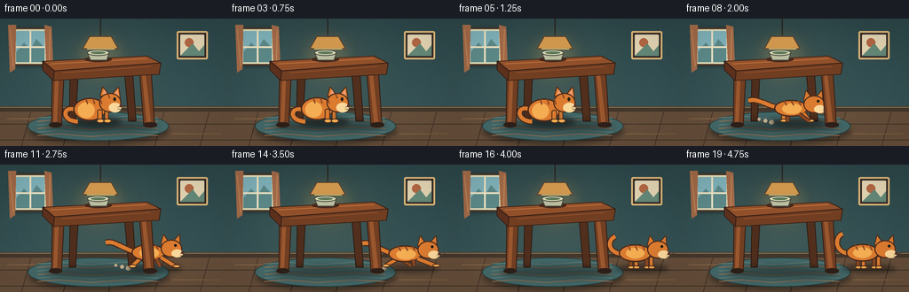
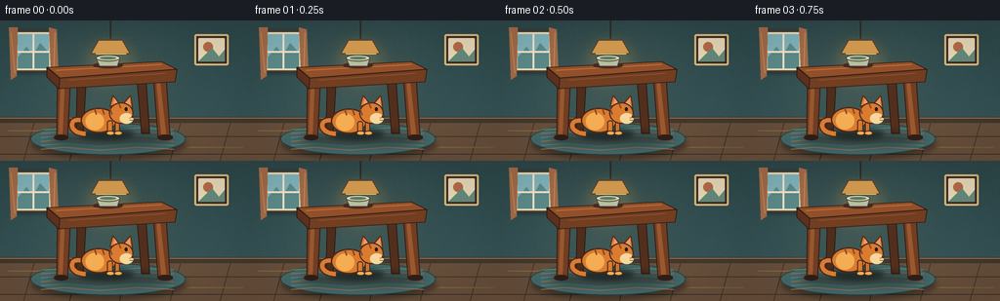
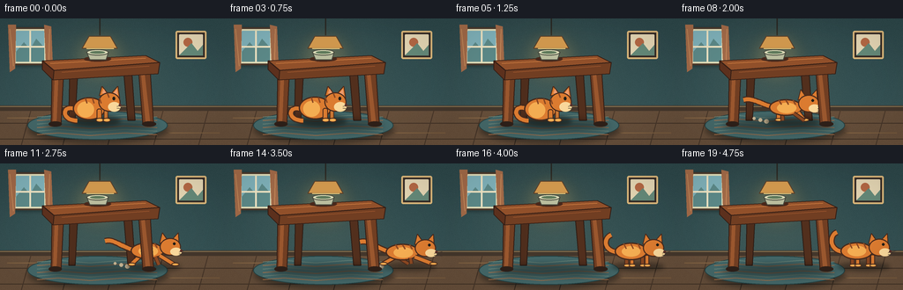
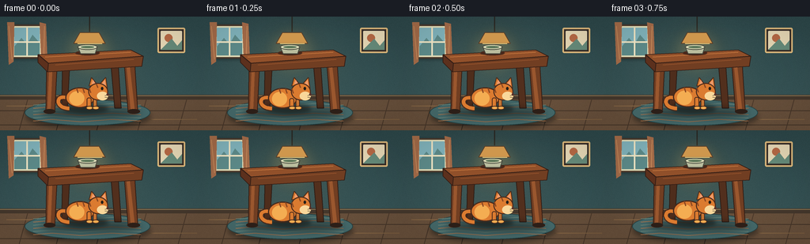

CODING AGENTS AS PIXEL WORLD MODELS
traex/GPT-5.6-Sol · dynamic_spatial_relationship_0016
点击播放 · 原生 RGB 像素
逐轮保存的候选
回放视频、检查图与代码变化。
每份候选均可单独播放。实际图片检查记录在下方工具轨迹中。
候选 01播放与检查图
点击播放 · 原生 RGB 像素


展开代码变化
--- 上一保存版本
+++ 本次保存版本
@@ -0,0 +1,316 @@
+from pathlib import Path
+import math
+import numpy as np
+from PIL import Image, ImageDraw, ImageFilter
+import artifact_io
+
+# A hand-rendered, softly lit 2-D animation. Supersampling keeps the small
+# animal and its facial features readable at the requested 256 x 144 size.
+W, H, N = 256, 144, 20
+S = 4
+SW, SH = W*S, H*S
+rng = np.random.default_rng(16)
+
+
+def P(v):
+ return int(round(v*S))
+
+def box(coords):
+ return tuple(P(v) for v in coords)
+
+def pts(seq):
+ return [(P(x), P(y)) for x, y in seq]
+
+def ellipse(d, b, fill, outline=None, width=1):
+ d.ellipse(box(b), fill=fill, outline=outline, width=P(width) if outline else 1)
+
+def polygon(d, q, fill, outline=None):
+ d.polygon(pts(q), fill=fill)
+ if outline:
+ d.line(pts(list(q)+[q[0]]), fill=outline, width=P(1), joint='curve')
+
+def line(d, q, fill, width, joint='curve'):
+ d.line(pts(q), fill=fill, width=P(width), joint=joint)
+
+def rounded(d, b, radius, fill, outline=None, width=1):
+ d.rounded_rectangle(box(b), radius=P(radius), fill=fill,
+ outline=outline, width=P(width) if outline else 1)
+
+def cubic(a, b, c, d, steps=22):
+ out=[]
+ for t in np.linspace(0,1,steps):
+ u=1-t
+ out.append((u**3*a[0]+3*u*u*t*b[0]+3*u*t*t*c[0]+t**3*d[0],
+ u**3*a[1]+3*u*u*t*b[1]+3*u*t*t*c[1]+t**3*d[1]))
+ return out
+
+def blur_shape(size, painter, radius):
+ lay=Image.new('RGBA', size, (0,0,0,0)); dd=ImageDraw.Draw(lay)
+ painter(dd)
+ return lay.filter(ImageFilter.GaussianBlur(P(radius)))
+
+
+def make_room(frame):
+ # Subtle vertical wall and floor gradients.
+ yy=np.arange(SH)[:,None]
+ xx=np.arange(SW)[None,:]
+ arr=np.zeros((SH,SW,3),dtype=np.float32)
+ wall=np.clip(yy/(103*S),0,1)
+ arr[:,:,0]=np.where(yy<102*S, 43+10*wall, 101)
+ arr[:,:,1]=np.where(yy<102*S, 69+13*wall, 78)
+ arr[:,:,2]=np.where(yy<102*S, 72+12*wall, 58)
+ # Warm pool of lamplight in center.
+ glow=np.exp(-(((xx/S-112)/82)**2+((yy/S-59)/64)**2)*2.0)
+ arr += glow[...,None]*np.array([17,13,7])[None,None,:]
+ # Tiny deterministic painted texture, fixed over time (no video flicker).
+ noise=rng.normal(0,0.8,(H,W,1))
+ noise=np.repeat(np.repeat(noise,S,0),S,1)
+ arr += noise
+ arr=np.uint8(np.clip(arr,0,255))
+ im=Image.fromarray(arr,'RGB').convert('RGBA')
+ d=ImageDraw.Draw(im)
+
+ # Window at left with a cool outdoor glow.
+ shadow=blur_shape((SW,SH), lambda q: rounded(q,(15,11,55,54),3,(5,18,20,115)),2)
+ im.alpha_composite(shadow)
+ rounded(d,(14,10,54,53),3,(224,220,183,255),(72,55,42,255),2)
+ rounded(d,(18,14,50,49),1,(126,176,184,255))
+ polygon(d,[(18,38),(27,27),(34,35),(41,23),(50,33),(50,49),(18,49)],(91,136,135,255))
+ line(d,[(34,14),(34,49)],(238,228,195,210),2)
+ line(d,[(18,32),(50,32)],(238,228,195,210),2)
+ # Curtain edges.
+ polygon(d,[(9,7),(18,7),(17,57),(11,61)],(161,105,71,255))
+ polygon(d,[(50,7),(58,9),(60,60),(52,55)],(161,105,71,255))
+ line(d,[(11,12),(15,54)],(193,135,88,170),1)
+ line(d,[(56,12),(55,54)],(193,135,88,170),1)
+
+ # Small framed abstract print, intentionally secondary to the table/cat.
+ rounded(d,(199,14,234,46),2,(52,43,38,255),(217,181,121,255),2)
+ rounded(d,(203,18,230,42),1,(225,211,177,255))
+ ellipse(d,(208,22,218,32),(177,102,67,255))
+ polygon(d,[(207,38),(217,28),(224,37),(230,30),(230,42),(203,42)],(99,135,119,255))
+
+ # Hanging light and warm shade.
+ line(d,[(113,0),(113,19)],(39,38,34,255),1.5)
+ glowlay=blur_shape((SW,SH),lambda q: ellipse(q,(82,14,144,72),(255,196,89,42)),10)
+ im.alpha_composite(glowlay); d=ImageDraw.Draw(im)
+ polygon(d,[(101,20),(125,20),(133,34),(93,34)],(207,151,77,255),(89,62,40,255))
+ line(d,[(98,34),(129,34)],(247,209,126,255),1)
+
+ # Baseboard and wood floor.
+ d.rectangle(box((0,99,256,105)),fill=(67,54,43,255))
+ line(d,[(0,100),(256,100)],(137,117,83,255),1)
+ for y in (119,137):
+ line(d,[(0,y),(256,y)],(69,53,40,110),1)
+ for x in (-10,35,82,133,185,236,282):
+ line(d,[(x,104),(x-11,144)],(74,56,42,100),1)
+ # Long floor highlights.
+ line(d,[(8,113),(70,113)],(150,114,76,60),1)
+ line(d,[(189,130),(249,130)],(153,116,77,50),1)
+
+ # Woven rug beneath the table.
+ rugshadow=blur_shape((SW,SH),lambda q: ellipse(q,(32,111,190,142),(15,20,20,120)),3)
+ im.alpha_composite(rugshadow); d=ImageDraw.Draw(im)
+ ellipse(d,(31,105,190,138),(67,103,104,255),(36,65,67,255),1)
+ for k in range(6):
+ y0=112+k*4
+ # Curving stripes give it a handmade, perspective-flattened look.
+ line(d,[(42,y0),(66,y0-2),(102,y0+1),(141,y0-2),(178,y0)],
+ (108,137,125,150) if k%2==0 else (180,121,79,120),1)
+ return im
+
+
+def draw_rear_table(im):
+ d=ImageDraw.Draw(im)
+ # Rear legs are dimmer and establish a space the cat can occupy inside.
+ polygon(d,[(79,59),(88,59),(85,116),(78,116)],(78,45,28,255),(46,29,21,255))
+ polygon(d,[(140,57),(149,57),(153,116),(145,116)],(82,47,29,255),(46,29,21,255))
+ # Grounded shadows under all four feet.
+ sh=blur_shape((SW,SH),lambda q: ellipse(q,(51,115,178,128),(17,18,17,120)),4)
+ im.alpha_composite(sh)
+
+
+def draw_dust(im, f, cx):
+ if not (8 <= f <= 14): return
+ d=ImageDraw.Draw(im)
+ age=(f-8)
+ # Small translucent puffs left behind the paws, a readable running cue.
+ for j in range(3):
+ px=cx-29-j*7-age*.25
+ py=117-j*1.7
+ r=2.6-j*.45
+ ellipse(d,(px-r,py-r,px+r,py+r),(191,174,142,max(30,105-age*7-j*16)))
+
+
+def draw_cat(im, f, cx, mode):
+ d=ImageDraw.Draw(im)
+ outline=(72,42,28,255)
+ orange=(219,123,48,255)
+ light=(244,173,82,255)
+ dark=(139,72,34,255)
+ cream=(249,215,154,255)
+
+ if mode=='crouch':
+ breathe=0.65*math.sin(f*math.pi/2)
+ cy=103.5+breathe
+ # soft contact shadow
+ sh=blur_shape((SW,SH),lambda q: ellipse(q,(cx-27,111,cx+29,122),(18,20,18,135)),2.5)
+ im.alpha_composite(sh); d=ImageDraw.Draw(im)
+ # Tail curls visibly to the left, changing slightly from frame to frame.
+ wave=1.7*math.sin(f*.9)
+ tail=cubic((cx-19,104),(cx-39,96+wave),(cx-39,116),(cx-20,116),24)
+ line(d,tail,outline,7); line(d,tail,orange,4.5)
+ ellipse(d,(cx-25,cy-14,cx+12,cy+12),orange,outline,1.4)
+ # haunch highlight
+ ellipse(d,(cx-20,cy-9,cx-1,cy+9),light)
+ # tucked paws and forelegs
+ rounded(d,(cx+2,cy-1,cx+8,116),2.5,orange,outline,1)
+ ellipse(d,(cx+1,113,cx+10,118),light,outline,1)
+ rounded(d,(cx+10,cy-2,cx+15,116),2.2,orange,outline,1)
+ ellipse(d,(cx+9,113,cx+18,118),light,outline,1)
+ # head and ears
+ polygon(d,[(cx+5,88),(cx+8,77),(cx+15,86)],orange,outline)
+ polygon(d,[(cx+19,85),(cx+26,77),(cx+28,91)],orange,outline)
+ polygon(d,[(cx+8,85),(cx+10,80),(cx+14,86)],(238,155,108,255))
+ polygon(d,[(cx+21,85),(cx+25,80),(cx+26,89)],(238,155,108,255))
+ ellipse(d,(cx+4,84,cx+29,106),orange,outline,1.3)
+ # cheek and muzzle
+ ellipse(d,(cx+15,95,cx+29,106),cream)
+ # eye, nose and whiskers facing right
+ ellipse(d,(cx+20,89,cx+23,93),(35,31,24,255))
+ ellipse(d,(cx+27,97,cx+30,100),(91,48,43,255))
+ line(d,[(cx+25,100),(cx+34,98)],(68,57,46,190),.65)
+ line(d,[(cx+25,102),(cx+34,103)],(68,57,46,190),.65)
+ # tabby stripes
+ for off in (-11,-3,5):
+ line(d,[(cx+off,cy-13),(cx+off+2,cy-7)],dark,1.6)
+ line(d,[(cx+14,85),(cx+16,90)],dark,1.4)
+ return
+
+ if mode=='run':
+ phase=(f-6)*1.75
+ cy=102+1.3*math.sin(phase*2)
+ # moving shadow remains attached to the floor
+ sh=blur_shape((SW,SH),lambda q: ellipse(q,(cx-29,113,cx+31,122),(18,20,18,115)),2.8)
+ im.alpha_composite(sh); d=ImageDraw.Draw(im)
+ # Tail streams left, with a springy tip.
+ tw=3*math.sin(phase*.7)
+ tail=cubic((cx-22,cy-2),(cx-39,cy-7),(cx-46,cy-15+tw),(cx-55,cy-12+tw),25)
+ line(d,tail,outline,7); line(d,tail,orange,4.5)
+ # Legs alternate between a reaching and a gathered gait.
+ swing=math.sin(phase)
+ # rear leg
+ rearhip=(cx-15,cy+4)
+ rearfoot=(cx-19-10*swing,116-2*abs(swing))
+ line(d,[rearhip,rearfoot],outline,6); line(d,[rearhip,rearfoot],orange,3.8)
+ ellipse(d,(rearfoot[0]-4,rearfoot[1]-2,rearfoot[0]+5,rearfoot[1]+2),light,outline,1)
+ # far rear (muted)
+ r2=(cx-8+8*swing,117-3*abs(swing))
+ line(d,[(cx-11,cy+5),r2],outline,5); line(d,[(cx-11,cy+5),r2],dark,3)
+ # body
+ ellipse(d,(cx-26,cy-11,cx+12,cy+8),orange,outline,1.4)
+ ellipse(d,(cx-17,cy-7,cx+5,cy+5),light)
+ # front legs reach opposite to rear
+ frontfoot=(cx+17+10*swing,116-2*abs(swing))
+ line(d,[(cx+7,cy+4),frontfoot],outline,6); line(d,[(cx+7,cy+4),frontfoot],orange,3.8)
+ ellipse(d,(frontfoot[0]-3,frontfoot[1]-2,frontfoot[0]+6,frontfoot[1]+2),light,outline,1)
+ f2=(cx+11-8*swing,117-3*abs(swing))
+ line(d,[(cx+2,cy+5),f2],outline,5); line(d,[(cx+2,cy+5),f2],dark,3)
+ # forward, alert head
+ polygon(d,[(cx+7,cy-10),(cx+10,cy-22),(cx+17,cy-12)],orange,outline)
+ polygon(d,[(cx+20,cy-13),(cx+28,cy-22),(cx+29,cy-7)],orange,outline)
+ ellipse(d,(cx+7,cy-16,cx+31,cy+4),orange,outline,1.3)
+ ellipse(d,(cx+19,cy-5,cx+32,cy+4),cream)
+ ellipse(d,(cx+22,cy-11,cx+25,cy-8),(28,27,22,255))
+ ellipse(d,(cx+30,cy-3,cx+33,cy),(90,45,39,255))
+ line(d,[(cx+29,cy),(cx+38,cy-2)],(65,54,44,180),.65)
+ line(d,[(cx+29,cy+2),(cx+38,cy+3)],(65,54,44,180),.65)
+ for off in (-15,-7,1):
+ line(d,[(cx+off,cy-10),(cx+off+3,cy-5)],dark,1.5)
+ return
+
+ # Final standing pose to the right: all four feet down, head still turned right.
+ cy=102+0.45*math.sin((f-16)*1.4)
+ sh=blur_shape((SW,SH),lambda q: ellipse(q,(cx-29,113,cx+31,122),(18,20,18,125)),2.6)
+ im.alpha_composite(sh); d=ImageDraw.Draw(im)
+ tw=2.5*math.sin((f-15)*.85)
+ tail=cubic((cx-22,cy-1),(cx-38,cy-3),(cx-38,cy-19+tw),(cx-29,cy-23+tw),24)
+ line(d,tail,outline,7); line(d,tail,orange,4.5)
+ # back legs, body, then forelegs
+ for xoff,col in [(-14,dark),(-8,orange),(4,dark),(9,orange)]:
+ rounded(d,(cx+xoff,cy+2,cx+xoff+5,116),2,col,outline,1)
+ ellipse(d,(cx+xoff-1,114,cx+xoff+7,118),light,outline,1)
+ ellipse(d,(cx-25,cy-12,cx+12,cy+8),orange,outline,1.4)
+ ellipse(d,(cx-17,cy-8,cx+4,cy+4),light)
+ polygon(d,[(cx+7,cy-10),(cx+10,cy-22),(cx+17,cy-12)],orange,outline)
+ polygon(d,[(cx+20,cy-13),(cx+28,cy-22),(cx+29,cy-7)],orange,outline)
+ ellipse(d,(cx+7,cy-16,cx+31,cy+4),orange,outline,1.3)
+ ellipse(d,(cx+19,cy-5,cx+32,cy+4),cream)
+ ellipse(d,(cx+22,cy-11,cx+25,cy-8),(28,27,22,255))
+ ellipse(d,(cx+30,cy-3,cx+33,cy),(90,45,39,255))
+ line(d,[(cx+29,cy),(cx+38,cy-2)],(65,54,44,180),.65)
+ line(d,[(cx+29,cy+2),(cx+38,cy+3)],(65,54,44,180),.65)
+ for off in (-15,-7,1):
+ line(d,[(cx+off,cy-11),(cx+off+3,cy-5)],dark,1.5)
+
+
+def draw_front_table(im):
+ d=ImageDraw.Draw(im)
+ edge=(52,30,21,255)
+ wood=(113,62,34,255)
+ woodlight=(154,87,46,255)
+ # Front legs are foreground occluders; the cat literally emerges past the right one.
+ polygon(d,[(59,60),(72,60),(69,121),(58,121)],wood,edge)
+ polygon(d,[(157,58),(170,58),(174,121),(162,121)],wood,edge)
+ polygon(d,[(62,66),(66,66),(64,117),(60,117)],woodlight)
+ polygon(d,[(160,64),(164,64),(170,117),(165,117)],woodlight)
+ ellipse(d,(55,117,70,123),(45,31,24,180))
+ ellipse(d,(161,117,177,123),(45,31,24,180))
+ # Table top, shown in gentle perspective.
+ polygon(d,[(48,48),(165,42),(181,50),(61,59)],(145,80,42,255),edge)
+ polygon(d,[(61,59),(181,50),(179,63),(60,70)],wood,edge)
+ polygon(d,[(48,48),(61,59),(60,70),(48,58)],(92,48,29,255),edge)
+ line(d,[(57,51),(165,45)],(199,120,63,180),1)
+ line(d,[(70,61),(169,54)],(151,83,44,190),1)
+ # A small ceramic bowl anchors scale without competing with the action.
+ ellipse(d,(95,43,126,49),(72,40,27,130))
+ polygon(d,[(98,38),(123,38),(120,47),(102,47)],(186,189,158,255),(70,73,62,255))
+ ellipse(d,(98,35,123,42),(218,218,182,255),(70,73,62,255),1)
+ ellipse(d,(102,37,119,40),(95,121,91,255))
+
+
+def compose_frame(f):
+ im=make_room(f)
+ draw_rear_table(im)
+ # Six frames make the initial relation unambiguous. Then smoothstep gives
+ # a quick, readable dash and a stable final position wholly right of table.
+ if f <= 5:
+ cx=107.5 + .35*math.sin(f*.8)
+ mode='crouch'
+ elif f <= 15:
+ t=(f-5)/10.0
+ ease=t*t*(3-2*t)
+ cx=108 + 102*ease
+ mode='run'
+ else:
+ cx=210
+ mode='stand'
+ draw_dust(im,f,cx)
+ draw_cat(im,f,cx,mode)
+ draw_front_table(im)
+ # Very subtle vignette for a finished, cinematic frame.
+ y,x=np.ogrid[:SH,:SW]
+ dx=(x-SW/2)/(SW/2); dy=(y-SH/2)/(SH/2)
+ vig=np.clip((dx*dx+dy*dy-.45)*22,0,20).astype(np.uint8)
+ rgba=np.zeros((SH,SW,4),dtype=np.uint8); rgba[:,:,:3]=np.array([20,15,12],np.uint8); rgba[:,:,3]=vig
+ im=Image.alpha_composite(im,Image.fromarray(rgba,'RGBA'))
+ im=im.convert('RGB').resize((W,H),Image.Resampling.LANCZOS)
+ return np.asarray(im,dtype=np.uint8)
+
+
+def main():
+ frames=np.stack([compose_frame(i) for i in range(N)],axis=0)
+ artifact_io.save(frames,Path(__file__).resolve().parent)
+
+if __name__=='__main__':
+ main()
候选 02播放与检查图
点击播放 · 原生 RGB 像素


展开代码变化
--- 上一保存版本
+++ 本次保存版本
@@ -10,6 +10,7 @@
S = 4
SW, SH = W*S, H*S
rng = np.random.default_rng(16)
+ROOM_NOISE = np.repeat(np.repeat(rng.normal(0, 0.8, (H, W, 1)), S, 0), S, 1)
def P(v):
@@ -63,9 +64,7 @@
glow=np.exp(-(((xx/S-112)/82)**2+((yy/S-59)/64)**2)*2.0)
arr += glow[...,None]*np.array([17,13,7])[None,None,:]
# Tiny deterministic painted texture, fixed over time (no video flicker).
- noise=rng.normal(0,0.8,(H,W,1))
- noise=np.repeat(np.repeat(noise,S,0),S,1)
- arr += noise
+ arr += ROOM_NOISE
arr=np.uint8(np.clip(arr,0,255))
im=Image.fromarray(arr,'RGB').convert('RGBA')
d=ImageDraw.Draw(im)
可观测工具轨迹
实际执行的命令与返回图片。
命令 1exit 0
/bin/bash -lc "cat prompt.txt && printf '\\n--- GENERATION_RULES.md ---\\n' && cat GENERATION_RULES.md && printf '\\n--- task_spec.json ---\\n' && cat task_spec.json"
命令 2exit 0
/bin/bash -lc "find . -maxdepth 2 -type f -printf '%p\\n' | sort && printf '\\n--- tools ---\\n' && command -v ffmpeg || true && command -v python3 || true"
命令 3exit 0
/bin/bash -lc 'cat artifact_io.py'
命令 4exit 0
/bin/bash -lc "cat > generate.py <<'PY'
from pathlib import Path
import math
import numpy as np
from PIL import Image, ImageDraw, ImageFilter
import artifact_io
# A hand-rendered, softly lit 2-D animation. Supersampling keeps the small
# animal and its facial features readable at the requested 256 x 144 size.
W, H, N = 256, 144, 20
S = 4
SW, SH = W*S, H*S
rng = np.random.default_rng(16)
def P(v):
return int(round(v*S))
def box(coords):
return tuple(P(v) for v in coords)
def pts(seq):
return [(P(x), P(y)) for x, y in seq]
def ellipse(d, b, fill, outline=None, width=1):
d.ellipse(box(b), fill=fill, outline=outline, width=P(width) if outline else 1)
def polygon(d, q, fill, outline=None):
d.polygon(pts(q), fill=fill)
if outline:
d.line(pts(list(q)+[q[0]]), fill=outline, width=P(1), joint='curve')
def line(d, q, fill, width, joint='curve'):
d.line(pts(q), fill=fill, width=P(width), joint=joint)
def rounded(d, b, radius, fill, outline=None, width=1):
d.rounded_rectangle(box(b), radius=P(radius), fill=fill,
outline=outline, width=P(width) if outline else 1)
def cubic(a, b, c, d, steps=22):
out=[]
for t in np.linspace(0,1,steps):
u=1-t
out.append((u**3*a[0]+3*u*u*t*b[0]+3*u*t*t*c[0]+t**3*d[0],
u**3*a[1]+3*u*u*t*b[1]+3*u*t*t*c[1]+t**3*d[1]))
return out
def blur_shape(size, painter, radius):
lay=Image.new('RGBA', size, (0,0,0,0)); dd=ImageDraw.Draw(lay)
painter(dd)
return lay.filter(ImageFilter.GaussianBlur(P(radius)))
def make_room(frame):
# Subtle vertical wall and floor gradients.
yy=np.arange(SH)[:,None]
xx=np.arange(SW)[None,:]
arr=np.zeros((SH,SW,3),dtype=np.float32)
wall=np.clip(yy/(103*S),0,1)
arr[:,:,0]=np.where(yy<102*S, 43+10*wall, 101)
arr[:,:,1]=np.where(yy<102*S, 69+13*wall, 78)
arr[:,:,2]=np.where(yy<102*S, 72+12*wall, 58)
# Warm pool of lamplight in center.
glow=np.exp(-(((xx/S-112)/82)**2+((yy/S-59)/64)**2)*2.0)
arr += glow[...,None]*np.array([17,13,7])[None,None,:]
# Tiny deterministic painted texture, fixed over time (no video flicker).
noise=rng.normal(0,0.8,(H,W,1))
noise=np.repeat(np.repeat(noise,S,0),S,1)
arr += noise
arr=np.uint8(np.clip(arr,0,255))
im=Image.fromarray(arr,'RGB').convert('RGBA')
d=ImageDraw.Draw(im)
# Window at left with a cool outdoor glow.
shadow=blur_shape((SW,SH), lambda q: rounded(q,(15,11,55,54),3,(5,18,20,115)),2)
im.alpha_composite(shadow)
rounded(d,(14,10,54,53),3,(224,220,183,255),(72,55,42,255),2)
rounded(d,(18,14,50,49),1,(126,176,184,255))
polygon(d,[(18,38),(27,27),(34,35),(41,23),(50,33),(50,49),(18,49)],(91,136,135,255))
line(d,[(34,14),(34,49)],(238,228,195,210),2)
line(d,[(18,32),(50,32)],(238,228,195,210),2)
# Curtain edges.
polygon(d,[(9,7),(18,7),(17,57),(11,61)],(161,105,71,255))
polygon(d,[(50,7),(58,9),(60,60),(52,55)],(161,105,71,255))
line(d,[(11,12),(15,54)],(193,135,88,170),1)
line(d,[(56,12),(55,54)],(193,135,88,170),1)
# Small framed abstract print, intentionally secondary to the table/cat.
rounded(d,(199,14,234,46),2,(52,43,38,255),(217,181,121,255),2)
rounded(d,(203,18,230,42),1,(225,211,177,255))
ellipse(d,(208,22,218,32),(177,102,67,255))
polygon(d,[(207,38),(217,28),(224,37),(230,30),(230,42),(203,42)],(99,135,119,255))
# Hanging light and warm shade.
line(d,[(113,0),(113,19)],(39,38,34,255),1.5)
glowlay=blur_shape((SW,SH),lambda q: ellipse(q,(82,14,144,72),(255,196,89,42)),10)
im.alpha_composite(glowlay); d=ImageDraw.Draw(im)
polygon(d,[(101,20),(125,20),(133,34),(93,34)],(207,151,77,255),(89,62,40,255))
line(d,[(98,34),(129,34)],(247,209,126,255),1)
# Baseboard and wood floor.
d.rectangle(box((0,99,256,105)),fill=(67,54,43,255))
line(d,[(0,100),(256,100)],(137,117,83,255),1)
for y in (119,137):
line(d,[(0,y),(256,y)],(69,53,40,110),1)
for x in (-10,35,82,133,185,236,282):
line(d,[(x,104),(x-11,144)],(74,56,42,100),1)
# Long floor highlights.
line(d,[(8,113),(70,113)],(150,114,76,60),1)
line(d,[(189,130),(249,130)],(153,116,77,50),1)
# Woven rug beneath the table.
rugshadow=blur_shape((SW,SH),lambda q: ellipse(q,(32,111,190,142),(15,20,20,120)),3)
im.alpha_composite(rugshadow); d=ImageDraw.Draw(im)
ellipse(d,(31,105,190,138),(67,103,104,255),(36,65,67,255),1)
for k in range(6):
y0=112+k*4
# Curving stripes give it a handmade, perspective-flattened look.
line(d,[(42,y0),(66,y0-2),(102,y0+1),(141,y0-2),(178,y0)],
(108,137,125,150) if k%2==0 else (180,121,79,120),1)
return im
def draw_rear_table(im):
d=ImageDraw.Draw(im)
# Rear legs are dimmer and establish a space the cat can occupy inside.
polygon(d,[(79,59),(88,59),(85,116),(78,116)],(78,45,28,255),(46,29,21,255))
polygon(d,[(140,57),(149,57),(153,116),(145,116)],(82,47,29,255),(46,29,21,255))
# Grounded shadows under all four feet.
sh=blur_shape((SW,SH),lambda q: ellipse(q,(51,115,178,128),(17,18,17,120)),4)
im.alpha_composite(sh)
def draw_dust(im, f, cx):
if not (8 <= f <= 14): return
d=ImageDraw.Draw(im)
age=(f-8)
# Small translucent puffs left behind the paws, a readable running cue.
for j in range(3):
px=cx-29-j*7-age*.25
py=117-j*1.7
r=2.6-j*.45
ellipse(d,(px-r,py-r,px+r,py+r),(191,174,142,max(30,105-age*7-j*16)))
def draw_cat(im, f, cx, mode):
d=ImageDraw.Draw(im)
outline=(72,42,28,255)
orange=(219,123,48,255)
light=(244,173,82,255)
dark=(139,72,34,255)
cream=(249,215,154,255)
if mode=='crouch':
breathe=0.65*math.sin(f*math.pi/2)
cy=103.5+breathe
# soft contact shadow
sh=blur_shape((SW,SH),lambda q: ellipse(q,(cx-27,111,cx+29,122),(18,20,18,135)),2.5)
im.alpha_composite(sh); d=ImageDraw.Draw(im)
# Tail curls visibly to the left, changing slightly from frame to frame.
wave=1.7*math.sin(f*.9)
tail=cubic((cx-19,104),(cx-39,96+wave),(cx-39,116),(cx-20,116),24)
line(d,tail,outline,7); line(d,tail,orange,4.5)
ellipse(d,(cx-25,cy-14,cx+12,cy+12),orange,outline,1.4)
# haunch highlight
ellipse(d,(cx-20,cy-9,cx-1,cy+9),light)
# tucked paws and forelegs
rounded(d,(cx+2,cy-1,cx+8,116),2.5,orange,outline,1)
ellipse(d,(cx+1,113,cx+10,118),light,outline,1)
rounded(d,(cx+10,cy-2,cx+15,116),2.2,orange,outline,1)
ellipse(d,(cx+9,113,cx+18,118),light,outline,1)
# head and ears
polygon(d,[(cx+5,88),(cx+8,77),(cx+15,86)],orange,outline)
polygon(d,[(cx+19,85),(cx+26,77),(cx+28,91)],orange,outline)
polygon(d,[(cx+8,85),(cx+10,80),(cx+14,86)],(238,155,108,255))
polygon(d,[(cx+21,85),(cx+25,80),(cx+26,89)],(238,155,108,255))
ellipse(d,(cx+4,84,cx+29,106),orange,outline,1.3)
# cheek and muzzle
ellipse(d,(cx+15,95,cx+29,106),cream)
# eye, nose and whiskers facing right
ellipse(d,(cx+20,89,cx+23,93),(35,31,24,255))
ellipse(d,(cx+27,97,cx+30,100),(91,48,43,255))
line(d,[(cx+25,100),(cx+34,98)],(68,57,46,190),.65)
line(d,[(cx+25,102),(cx+34,103)],(68,57,46,190),.65)
# tabby stripes
for off in (-11,-3,5):
line(d,[(cx+off,cy-13),(cx+off+2,cy-7)],dark,1.6)
line(d,[(cx+14,85),(cx+16,90)],dark,1.4)
return
if mode=='run':
phase=(f-6)*1.75
cy=102+1.3*math.sin(phase*2)
# moving shadow remains attached to the floor
sh=blur_shape((SW,SH),lambda q: ellipse(q,(cx-29,113,cx+31,122),(18,20,18,115)),2.8)
im.alpha_composite(sh); d=ImageDraw.Draw(im)
# Tail streams left, with a springy tip.
tw=3*math.sin(phase*.7)
tail=cubic((cx-22,cy-2),(cx-39,cy-7),(cx-46,cy-15+tw),(cx-55,cy-12+tw),25)
line(d,tail,outline,7); line(d,tail,orange,4.5)
# Legs alternate between a reaching and a gathered gait.
swing=math.sin(phase)
# rear leg
rearhip=(cx-15,cy+4)
rearfoot=(cx-19-10*swing,116-2*abs(swing))
line(d,[rearhip,rearfoot],outline,6); line(d,[rearhip,rearfoot],orange,3.8)
ellipse(d,(rearfoot[0]-4,rearfoot[1]-2,rearfoot[0]+5,rearfoot[1]+2),light,outline,1)
# far rear (muted)
r2=(cx-8+8*swing,117-3*abs(swing))
line(d,[(cx-11,cy+5),r2],outline,5); line(d,[(cx-11,cy+5),r2],dark,3)
# body
ellipse(d,(cx-26,cy-11,cx+12,cy+8),orange,outline,1.4)
ellipse(d,(cx-17,cy-7,cx+5,cy+5),light)
# front legs reach opposite to rear
frontfoot=(cx+17+10*swing,116-2*abs(swing))
line(d,[(cx+7,cy+4),frontfoot],outline,6); line(d,[(cx+7,cy+4),frontfoot],orange,3.8)
ellipse(d,(frontfoot[0]-3,frontfoot[1]-2,frontfoot[0]+6,frontfoot[1]+2),light,outline,1)
f2=(cx+11-8*swing,117-3*abs(swing))
line(d,[(cx+2,cy+5),f2],outline,5); line(d,[(cx+2,cy+5),f2],dark,3)
# forward, alert head
polygon(d,[(cx+7,cy-10),(cx+10,cy-22),(cx+17,cy-12)],orange,outline)
polygon(d,[(cx+20,cy-13),(cx+28,cy-22),(cx+29,cy-7)],orange,outline)
ellipse(d,(cx+7,cy-16,cx+31,cy+4),orange,outline,1.3)
ellipse(d,(cx+19,cy-5,cx+32,cy+4),cream)
ellipse(d,(cx+22,cy-11,cx+25,cy-8),(28,27,22,255))
ellipse(d,(cx+30,cy-3,cx+33,cy),(90,45,39,255))
line(d,[(cx+29,cy),(cx+38,cy-2)],(65,54,44,180),.65)
line(d,[(cx+29,cy+2),(cx+38,cy+3)],(65,54,44,180),.65)
for off in (-15,-7,1):
line(d,[(cx+off,cy-10),(cx+off+3,cy-5)],dark,1.5)
return
# Final standing pose to the right: all four feet down, head still turned right.
cy=102+0.45*math.sin((f-16)*1.4)
sh=blur_shape((SW,SH),lambda q: ellipse(q,(cx-29,113,cx+31,122),(18,20,18,125)),2.6)
im.alpha_composite(sh); d=ImageDraw.Draw(im)
tw=2.5*math.sin((f-15)*.85)
tail=cubic((cx-22,cy-1),(cx-38,cy-3),(cx-38,cy-19+tw),(cx-29,cy-23+tw),24)
line(d,tail,outline,7); line(d,tail,orange,4.5)
# back legs, body, then forelegs
for xoff,col in [(-14,dark),(-8,orange),(4,dark),(9,orange)]:
rounded(d,(cx+xoff,cy+2,cx+xoff+5,116),2,col,outline,1)
ellipse(d,(cx+xoff-1,114,cx+xoff+7,118),light,outline,1)
ellipse(d,(cx-25,cy-12,cx+12,cy+8),orange,outline,1.4)
ellipse(d,(cx-17,cy-8,cx+4,cy+4),light)
polygon(d,[(cx+7,cy-10),(cx+10,cy-22),(cx+17,cy-12)],orange,outline)
polygon(d,[(cx+20,cy-13),(cx+28,cy-22),(cx+29,cy-7)],orange,outline)
ellipse(d,(cx+7,cy-16,cx+31,cy+4),orange,outline,1.3)
ellipse(d,(cx+19,cy-5,cx+32,cy+4),cream)
ellipse(d,(cx+22,cy-11,cx+25,cy-8),(28,27,22,255))
ellipse(d,(cx+30,cy-3,cx+33,cy),(90,45,39,255))
line(d,[(cx+29,cy),(cx+38,cy-2)],(65,54,44,180),.65)
line(d,[(cx+29,cy+2),(cx+38,cy+3)],(65,54,44,180),.65)
for off in (-15,-7,1):
line(d,[(cx+off,cy-11),(cx+off+3,cy-5)],dark,1.5)
def draw_front_table(im):
d=ImageDraw.Draw(im)
edge=(52,30,21,255)
wood=(113,62,34,255)
woodlight=(154,87,46,255)
# Front legs are foreground occluders; the cat literally emerges past the right one.
polygon(d,[(59,60),(72,60),(69,121),(58,121)],wood,edge)
polygon(d,[(157,58),(170,58),(174,121),(162,121)],wood,edge)
polygon(d,[(62,66),(66,66),(64,117),(60,117)],woodlight)
polygon(d,[(160,64),(164,64),(170,117),(165,117)],woodlight)
ellipse(d,(55,117,70,123),(45,31,24,180))
ellipse(d,(161,117,177,123),(45,31,24,180))
# Table top, shown in gentle perspective.
polygon(d,[(48,48),(165,42),(181,50),(61,59)],(145,80,42,255),edge)
polygon(d,[(61,59),(181,50),(179,63),(60,70)],wood,edge)
polygon(d,[(48,48),(61,59),(60,70),(48,58)],(92,48,29,255),edge)
line(d,[(57,51),(165,45)],(199,120,63,180),1)
line(d,[(70,61),(169,54)],(151,83,44,190),1)
# A small ceramic bowl anchors scale without competing with the action.
ellipse(d,(95,43,126,49),(72,40,27,130))
polygon(d,[(98,38),(123,38),(120,47),(102,47)],(186,189,158,255),(70,73,62,255))
ellipse(d,(98,35,123,42),(218,218,182,255),(70,73,62,255),1)
ellipse(d,(102,37,119,40),(95,121,91,255))
def compose_frame(f):
im=make_room(f)
draw_rear_table(im)
# Six frames make the initial relation unambiguous. Then smoothstep gives
# a quick, readable dash and a stable final position wholly right of table.
if f <= 5:
cx=107.5 + .35*math.sin(f*.8)
mode='crouch'
elif f <= 15:
t=(f-5)/10.0
ease=t*t*(3-2*t)
cx=108 + 102*ease
mode='run'
else:
cx=210
mode='stand'
draw_dust(im,f,cx)
draw_cat(im,f,cx,mode)
draw_front_table(im)
# Very subtle vignette for a finished, cinematic frame.
y,x=np.ogrid[:SH,:SW]
dx=(x-SW/2)/(SW/2); dy=(y-SH/2)/(SH/2)
vig=np.clip((dx*dx+dy*dy-.45)*22,0,20).astype(np.uint8)
rgba=np.zeros((SH,SW,4),dtype=np.uint8); rgba[:,:,:3]=np.array([20,15,12],np.uint8); rgba[:,:,3]=vig
im=Image.alpha_composite(im,Image.fromarray(rgba,'RGBA'))
im=im.convert('RGB').resize((W,H),Image.Resampling.LANCZOS)
return np.asarray(im,dtype=np.uint8)
def main():
frames=np.stack([compose_frame(i) for i in range(N)],axis=0)
artifact_io.save(frames,Path(__file__).resolve().parent)
if __name__=='__main__':
main()
PY
python3 generate.py
python3 - <<'PY'
import numpy as np
from PIL import Image
x=np.load('pixels.npz')['pixels']
print('packed tensor',x.shape,x.dtype,'range',int(x.min()),int(x.max()))
print('frames',len(list(__import__('pathlib').Path('frames').glob('*.png'))))
for i in [0,5,8,10,12,15,19]:
a=np.array(Image.open(f'frames/{i:02d}.png'))
print(i, a.shape, a.mean().round(2), 'delta' if i else '', (np.abs(a.astype(int)-np.array(Image.open(f'frames/{max(0,i-1):02d}.png')).astype(int)).mean().round(2) if i else ''))
PY"命令 5exit 1
/bin/bash -lc "python3 generate.py >/tmp/gen.log 2>&1 && python3 - <<'PY'
from PIL import Image
import numpy as np, pathlib
ims=[np.asarray(Image.open(f'frames/{i:02d}.png')) for i in range(20)]
print('shape/dtype:',np.stack(ims).shape,np.stack(ims).dtype)
print('mean adjacent deltas:',[round(float(np.abs(ims[i].astype(int)-ims[i-1].astype(int)).mean()),2) for i in range(1,20)])
for p in ['pixels.npz','index.html','inspection.png','transition_check.png','generate.py']:
print(p,pathlib.Path(p).stat().st_size)
PY
cat /tmp/gen.log"命令 6exit 0
/bin/bash -lc "python3 generate.py > .tmp/gen.log 2>&1 && python3 - <<'PY'
from PIL import Image
import numpy as np, pathlib
ims=[np.asarray(Image.open(f'frames/{i:02d}.png')) for i in range(20)]
print('shape/dtype:',np.stack(ims).shape,np.stack(ims).dtype)
print('mean adjacent deltas:',[round(float(np.abs(ims[i].astype(int)-ims[i-1].astype(int)).mean()),2) for i in range(1,20)])
for p in ['pixels.npz','index.html','inspection.png','transition_check.png','generate.py']:
print(p,pathlib.Path(p).stat().st_size)
PY
cat .tmp/gen.log"保存候选 2 份；完成命令 6 次；可验证图片返回 0 张。原始 API 响应与完整日志保留在本地。